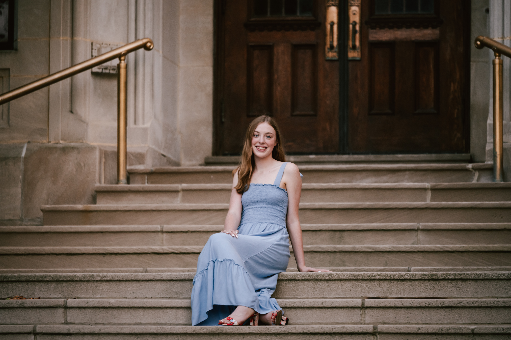

I am a sophomore at the University of Maryland, College Park, studying both journalism and law. I have a passion for research, writing and video reporting. I am beginning to pursue a route in investigative journalism and hope to one day use my knowledge in law and my skils in journalism towards making the world a better place.
Focused on creating stories that highlighted developments in both College Park and the Washington, D.C. area. I also worked alongside editors and other reporters to create content that was both meaningful and accurate.
Promoted RecWell programs and services while inspiring the UMD community to “be active and live well.” Through in-person and digital marketing, I focused on brand and content strategies, accessibility and video editing.
Focused on creating developmentally appropriate activities for children ages 2.5 to 3. Circle time and centers provided children with opportunities to grow in their motor skills, communication and understanding of the world around them. Each child had different needs and required different types of resources, paces, and hands-on support in order to excel at learning.
Contributed to live and recorded broadcasts, supporting show production in multiple technical roles. I operated camera and managed audio to ensure high-quality news coverage.
Covered meets and tracked team developments through timely previews, recaps, and feature stories. I conducted interviews with athletes and coaches, analyzed performance trends, and collaborated with editors to produce accurate and engaging sports journalism under tight deadlines.
Provided play-by-play and color commentary, as president and founder, for a variety of athletic events. I also captured game-day photography for both the school's soccer and golf teams.
Worked alongside the Saint Joseph Academy Athletic Department to design scoreboard graphics, social media content, behind-the-scenes features, and game-day photography to assist in program awareness. I also utilized Canva to create informational posters and branded graphics to increase program awareness.
Managed phone calls, coordinated appointments, operated the POS system, and opened and closed the salon. Additionally, I provided customer service support and assisted staff with daily operations, including organizing, ordering, and finding supplies.
Contributed to the high school newspaper by writing relevant news and feature stories, capturing event photography, covering school athletics and editing stories. I collaborated with other staff members to produce high-quality content to be distributed digitally to the school community.